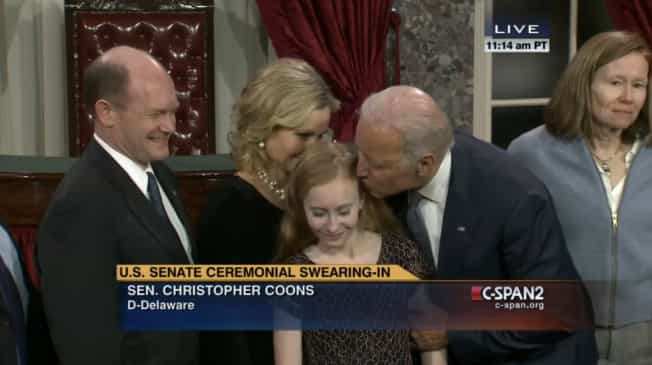
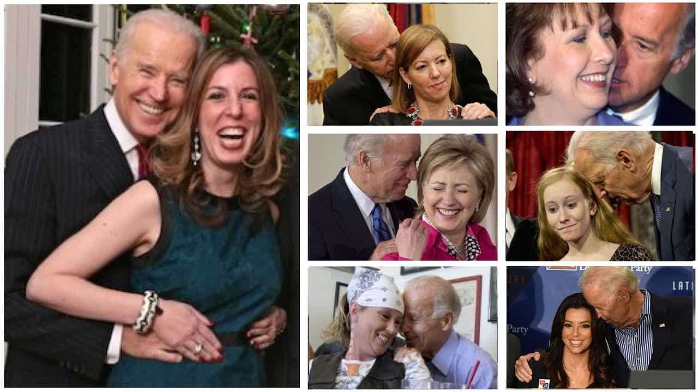
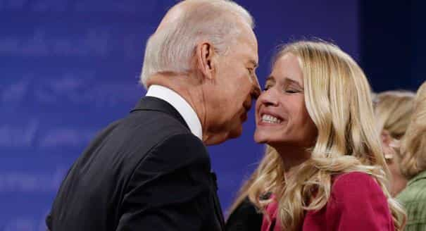

< < < Back
Would A Male Student Be Kicked Out Of College For Joe Biden-Style Kissing, Touching, And Lurking? – Return Of Kings
If Barack Obama were ever to be incapacitated, America would not only have a new Commander-in-Chief; it would have an inaugural Commander-in-Creepiness. Such is the reputation, largely swept under the carpet, of Vice President Joe Biden.
An entire photo album (or ten) could be made of the bizarre, forced, and frequently pathetic moments where he fondly touches women (usually without “affirmative consent”), kisses them in a cringeworthy fashion, or otherwise shows that he is obsessed with enforcing draconian expectations on male college students that he has no intention of following himself.
Biden the “protector”
Biden has been one of the chief peddler-architects of the truly Orwellian Campus Accountability and Safety Act (CASA), which is thankfully still a bill yet to pass Congress. Brought to the Senate by professional victim Senator Claire McCaskill, who suddenly realized Game of Thrones was violent after an off-camera rape scene and called for a boycott, CASA is widely deplored by civil libertarians who assert that it will result in “convictions” for “rape” with little or no evidence, let alone the standard of proof required in a court.
Worse still, in a gargantuan illustration of a conflict of interest, those colleges financially penalized for “not acting” on “sexual assault” would be punished by the same organisation, the Department of Education’s Office for Civil Rights, that would receive the fine monies.
Due to his widely documented predilection with touching and lurking over women without asking them, we can see that Joe Biden has a rather sadistic sense of humor. The progressive widening over decades of the definition of “sexual assault,” which can include catcalling and asking for sex, will catch male college students, but not men who graduated in the 1960s like Biden.
This would be sexual assault on any American college campus

White knight lawmakers like Biden frequently talk about men in “positions of power” getting away with things. Male college students have been expelled for this.
From the very firm grip of Biden’s hand and the feigned half-smile of the girl to her head moving away and her body stiffening, the photograph above screams “I do not want Joe Biden to touch or kiss me!”
Compare this to the story of Brian Ferguson, at the time a 20-year-old college special needs student from Texas. He was kicked out of college and later reinstated after hugging a girl and kissing her on the forehead because of mistaken identity. Officials knew he had autism and was in special needs classes at Navarro College. He may have been “exonerated” afterwards, but he was nonetheless kicked out of college at the outset. So where’s non-disabled Biden’s penalty?
I am not arguing that kissing women like Biden has repeatedly should somehow be “the new rape” and punished accordingly. The salient issue here is how and why colleges are singled out. There would be no cameras around when male college students allegedly kiss, hug or touch college women “without their consent.” Yet they can be (and have been) “convicted” of “sexual assault” and banned from college for things that Biden can do in front of the world’s media with absolute impunity.
Why won’t Joe Biden hold himself to what’s expected of male college students?

Women invariably respond to power, so perhaps college-style “sexual assault” is only sexual assault when the power differentials between the man and woman are closer or non-existent.
One mind-boggling case involving two gay students deserves particular attention. The “offender” was sanctioned by Brandeis University for kissing his boyfriend and regular sexual partner while he was waking up from being asleep. By that rationale, I have committed sexual assault 1,000 times and been the victim of it myself another 1,000 times. If two people consistently engaging in sex could not presume consent for kissing, how can Biden when he appears on television with all these relative female strangers?
It seems Biden would be a repeat college campus sexual offender of a much greater magnitude than me or anyone else reading this. And the power differentials between him and the women he kisses, touches, and lurks over are much greater than what you or I possess over the women we get involved with.
If there’s ever been a case of abusing “patriarchal power” to kiss or caress a woman, Biden is this case.
Joe Biden’s political skin is actually made of teflon

Imagine what beer pong with Biden was like in the 1960s.
You can be the proverbial alpha or a relatively popular person at your college and still find yourself in reputation-ruining hot water when you get involved with the wrong revenge- or attention-seeking women. But no hot water gets thrown at a Joe Biden. The falsely accused victims of both UVA’s Jackie Coakley and the Duke lacrosse scandal’s Crystal Mangum can attest to the disparity in how the same acts are treated, depending on whether you’re a politician or a male college student.
In the UVA and Duke cases, all the men were students with good reputations, who each found those reputations sullied not only by a sadistic woman but also by an educational system that treated her convoluted story as Gospel truth. Joe Biden, Barack Obama and others are so obsessed with courting the feminist, broader female and mangina vote that they ignore these stark, distinctly anti-civil rights realities.
Selling young men down the river for his own gain

Biden courting the “Michael Moore’s sister” vote.
Biden and Obama are both concerned with “posterity” and their place in American history, however degenerate it is becoming. Obama is term-limited and Biden has yet to rule out that another Presidential bid is on the cards. Should the Vice President balk at that option, his good health means that other senior roles in American politics are likely.
Tragically, the biggest benefactors of the rabid feminist left are men like Biden, not far less well-known cat ladies like Claire McCaskill. And the routine currency they spend to win the female vote are the rights and legal well-being of young American men.
Like Governor Jerry Brown and the Californian legislature that supported his own “affirmative consent” hogwash, Biden and other Democrats refuse to countenance the possibility that they should be held to the same ridiculous codes on Capitol Hill and in the White House as male college students are bound to on college campuses already, even before the further loss of liberties that will result from any passing of CASA.
If Joe Biden ever decides to head back to college as a mature student, it’s a good thing he has a law degree. With the way he accosts women in the photos above, he’d need to have legal training whilst on campus.
Read More: Academic Advisor Accuses Male College Student Of Harassment For Sitting In A Waiting Room